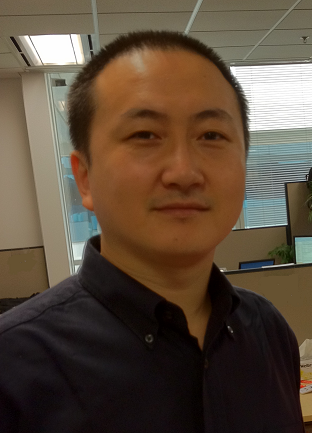

Introduction 讲师简介

刘吉东
资深IT技术专家，曾任甲骨文主任技术分析师（Principal Technical Analyst）
北京理工大学计算机系硕士，美国计算机学会专业会员
从事软件开发十六年。曾经在甲骨文、IBM和中软等公司工作。参与过国家电网、中国移动、中国建设银行、中国平安、中国联通、社会保障部、环保部、国家气象局等多个政府和大型国有企业信息系统项目。 曾获天津市科技进步二等奖和国家电监会科技进步二等奖各一项。
具有丰富的培训经验，曾经为国家电网、广大银行、中国平安、建设银行等多家大型国有企业提供过培训，深受学员称赞。 擅长企业信息系统架构设计、Web应用设计和开发。从操作系统内核、客户端应用开发，Web界面开发到高性能服务器端程序设计所涉及的各项技术都有丰富的实践经验和独到见解；擅长面向对象分析设计和分析解决复杂基础性技术问题。 目前担任北京豪络科技有限公司副总经理，主管豪络公司的软件开发工作。豪络科技是一家创新型科技公司，业务包括油田物联网应用开发、智能家居系统产品和移动互联网平台应用。
从业经历
- 曾经在IBM, 甲骨文，中软等公司工作。参与过国家电网、中国移动、建设银行等多个政府和大型国有企业信息系统项目。
- 曾于BEA公司担任资深培训讲师，为国家电网、广大银行、中国平安、建设银行、各省移动公司等多家大型国有企业提供过培训。
- 曾经在天津电力公司担任高级IT架构顾问，为天津电力用电管理系统的建设、实施和运维提供IT咨询服务。
擅长课题
| 企业IT基础架构设计和实施 | 企业信息系统架构设计 | Web应用设计和开发 |
| 获取课纲，请联系助教 |
项目经历
- 天津社保管理信息系统开发
- 华泰保险管理信息系统开发
- 河南省检察院管理信息系统开发
- 建设部中加交流项目架构设计、规划实施
- 为建设银行、中国移动、中国平安等公司提供BEA技术培训
- 为中国移动、中国平安、建设银行等BEA客户提供高级IT咨询服务
- 为天津电力公司提供高级iT咨询服务，并获得天津市科技进步二等奖，并作为代表在天津市科技大会领奖。
- 参与或主持国家气象局、环保部的部分IT技术项目。
- 为甲骨文的关键客户提供IT技术服务。
授课及交流网站
中国移动 、 中国联通 、 国家电网 、平安保险公司 、 建设银行 、广东制药 。
课程风格
- 深入浅出，擅长浅显易懂的方式讲解专业问题。
- 习惯于采用公理化方法讲解
授课照片

授课视频
| 点击观看 |
助教
助教：黎明
电话：13810914292
QQ : 13183702
E-mail：dodoii@126.com